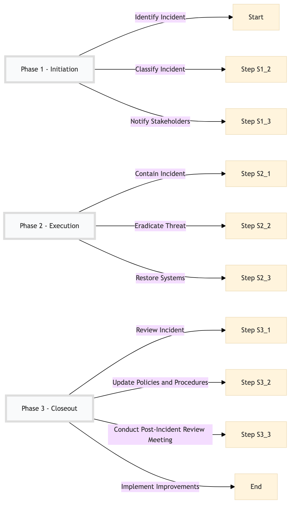

| Role | Steps |
|---|---|
| IT Security Analyst | 1.1 1.2 2.1 2.2 3.1 3.2 |
| IT Manager | 1.3 2.3 3.3 3.4 |
| Hotel Management | 3.3 |
| Step | Name | Role | System | Input | Output | KPI | Dec? | Exc? | Pain Point / Risk |
|---|---|---|---|---|---|---|---|---|---|
| 1.1 | Identify Incident | IT Security Analyst | Knowcross HotSOS | Security alert or report | Incident ticket in Oracle OPERA Cloud | Less than 5 minutes | N | Y | False positives leading to unnecessary alerts and response times. |
| 1.2 | Classify Incident | IT Security Analyst | Oracle OPERA Cloud | Incident ticket | Incident classification (e.g., low, medium, high) | Less than 10 minutes | Y | N | Misclassification leading to delayed response or overreaction. |
| 2.1 | Contain Incident | IT Security Analyst | Oracle OPERA Cloud, Honeywell INNCOM | Incident classification | Isolated affected systems or areas | Less than 15 minutes for low incidents, less than 30 minutes for medium incidents, less than 60 minutes for high incidents | N | Y | Difficulty in isolating systems without affecting core operations. |
| 2.2 | Eradicate Threat | IT Security Analyst | Oracle OPERA Cloud, Assa Abloy VingCard | Isolated affected systems | Threat eradicated and system restored | Less than 30 minutes for low incidents, less than 60 minutes for medium incidents, less than 120 minutes for high incidents | N | Y | Persistent threats that require multiple eradication attempts. |
| 3.1 | Review Incident | IT Security Analyst | Oracle OPERA Cloud, Microsoft Power BI | Incident resolution report | Root cause analysis and improvement plan | Less than 24 hours | N | Y | Lack of comprehensive data for thorough review. |
| 3.2 | Update Policies and Procedures | IT Security Analyst, IT Manager | Oracle OPERA Cloud, Salesforce | Root cause analysis and improvement plan | Updated security policies and procedures | Less than 48 hours | N | Y | Resistance to change in established processes. |
| 1.3 | Notify Stakeholders | IT Security Analyst, IT Manager | Oracle OPERA Cloud, Microsoft Teams | Incident classification and containment status | Notification to relevant stakeholders (e.g., hotel management, guests) | Less than 15 minutes for low incidents, less than 30 minutes for medium incidents, less than 60 minutes for high incidents | N | Y | Effective communication during critical situations. |
| 2.3 | Restore Systems | IT Security Analyst, IT Manager | Oracle OPERA Cloud, Honeywell INNCOM | Threat eradicated and system restored | Normal operations resumed | Less than 30 minutes for low incidents, less than 60 minutes for medium incidents, less than 120 minutes for high incidents | N | Y | System downtime affecting guest services. |
| 3.3 | Conduct Post-Incident Review Meeting | IT Security Analyst, IT Manager, Hotel Management | Oracle OPERA Cloud, Microsoft Teams | Incident resolution report and improvement plan | Action items and follow-up tasks | Less than 24 hours | N | Y | Coordination among multiple departments for effective review. |
| 3.4 | Implement Improvements | IT Security Analyst, IT Manager | Oracle OPERA Cloud, Salesforce | Action items and follow-up tasks | Implemented security improvements | Less than 7 days | N | Y | Resource constraints affecting the implementation of recommended changes. |
Cybersecurity Monitoring & Incident Response process at a Marriott full-service hotel ensures timely detection and resolution of security incidents to protect critical systems and data.